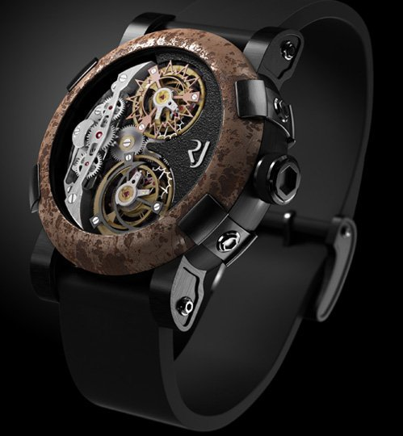

Romanson |
|
|  |
PRODUCT DETAILS
Наручные часы Romanson в наше время известны практически во всех странах мира, а ведь история бренда насчитывает менее тридцати лет. Компания «Романсон» взяла свое название по имени округа Романсхорн, расположенного в северо-восточной части Швейцарии. Часовой завод «Романсон» был создан в 1988 году, определив своей целевой аудиторией эстетов, уделяющих повышенное внимание совершенному дизайну хронометров. |
 Nicea
Ценить время в каждом мгновении
Nicea
Ценить время в каждом мгновении